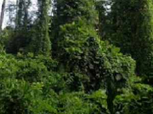
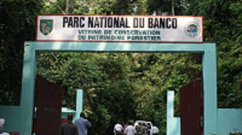
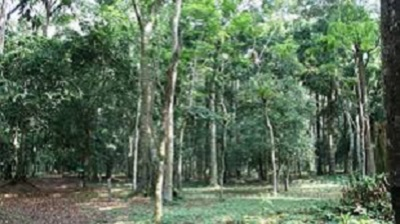

ici vous trouverez tous les sites touristiques a vister!!!
LE PARC NATIONAL DU BANCO
Le Parc national du Banco est un parc national de la Côte d'Ivoire situé en plein cœur d'Abidjan. Il a une superficie de 3474 hectares1.
Situé en bordure de l'autoroute du Nord, le parc national du Banco est un exemple de forêt primaire, avec des espèces de bois devenues rares (acajou, avodirés...). On y trouve de nombreux oiseaux et des singes. Selon une étude faite en 2004 et 2005 par le WCF, une douzaine de chimpanzés y vivraient encore. Des pistes pour promeneurs y ont été aménagées et de nombreux hôtels de toutes catégories y permettent un hébergement aisé.
Cette forêt est nécessaire parce qu'elle est le poumon vert de la ville d’Abidjan, et son réservoir hydraulique.



la cathédrale ST PAUL d'Abidjan
La cathédrale Saint-Paul d’Abidjan Elle a été bâtie par l'architecte italien Aldo Spirito, à Abidjan à l'initiative du président Félix Houphouët-Boigny. La première pierre de cette cathédrale a été bénie le 11 mai 1980 par le pape Jean-Paul II à l'occasion de sa première visite pastorale en Côte d'Ivoire1,2. Il a également consacré l'édifice achevé le 10 août 1985 lors d'une seconde visite dans ce pays3. Le coût de réalisation de cette œuvre architecturale est estimé à 6 milliards de francs CFA.
La cathédrale Saint-Paul d'Abidjan est l'émanation de l'église Saint-Paul du Plateau dont les premiers bâtiments ont été édifiés à Abidjan en 1913 et qui, devenue cathédrale Saint-Paul, a été bâtie en 1975 sur le site de l'imprimerie nationale.
Musée des civilisations de Côte d'Ivoire
Dans les années 40, tous les événements à caractères culturels des colons sont suspendus jusqu'à nouvel ordre. Afin de tirer des profits de cet édifice, le gouverneur Hubert Deschamps décide rapidement de le transformer en centre artisanal2.
En 1942, toutes sortes d'artisans s'y installent alors. En 1944 le gouverneur Jean-Luc Tournier chargé de la gestion du centre le rebaptise « Centrifan ». Le centre sera rattaché à l’IFAN la même année.
Le Centrifan devient en fait un lieu de collecte et de conservation des pièces authentiques. La même année, le bâtiment principal devient une salle d’exposition. Les artisans occupent le bâtiment actuellement réservé à l’administration. En 1947, la gestion du Centrifan est confiée à l’ethnologue Bohumil Holas jusqu’à sa mort en 1979. Le Centrifan prend le nom de Centre des Sciences Humaines à partir de 1961 jusqu’en 1972 où il est appelé musée national d’Abidjan.
C’est finalement en 1994, que l’institution revêt l’appellation musée des civilisations de Côte d’Ivoire comme le suggère le professeur Georges Niangoran-Bouah.
En mai 2006, Silvie Memel-Kassi, alors directrice du musée d'art contemporain de Cocody depuis 13 années, succède à Hortense Awalé Zagbayou et occupe la fonction de directrice du musée des civilisations
Jardin Botanique de Bingerville
Le Jardin botanique de Bingerville est un espace aménagé dans la Commune de Bingerville en Côte d'Ivoire, pour la conservation de plantes de diverses natures. Il a été créé en 1904 sur décision du Gouverneur Angoulvant1.
Il est constitué de différents espaces végétaux (palmeraies, espace fromager, espace Henri Konan Bédié, espace Ambassadeur, pépinières, etc.), d'une aire de pique-nique et d'un terrain de football. Certains arbres portent le nom de personnalités politiques (ambassadeurs, anciens ministres, etc.).
On peut facilement observer les végétaux et insectes communs de Côte d'Ivoire, et plus rarement quelques reptiles (lézard, serpent) ou mammifères (écureuil).